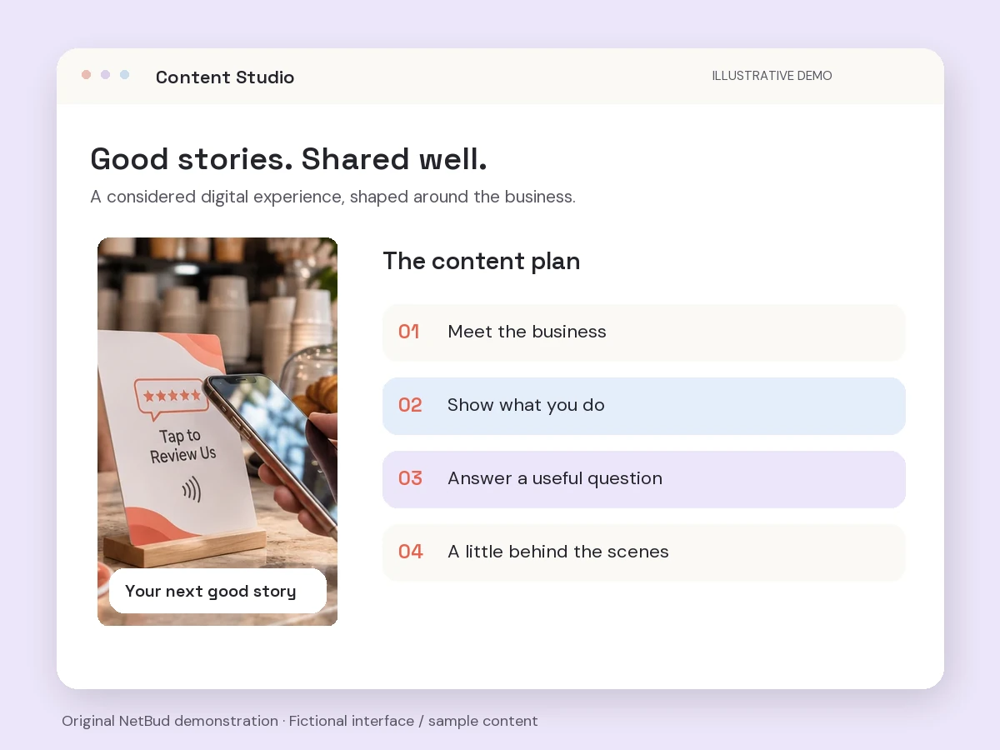

Typical template-builder workflow
- Start with a preset theme and its layout options.
- Choose functionality from supported blocks or extensions.
- Work within the builder’s code access and editing tools.
- Adapt content to the available page structure.
Websites, social content & digital support
A website customers can use. Content that shows what you do. A clear plan for your digital advertising.
Tell us what you need01 / Websites & online stores
Your business deserves more than a generic template. At NetBud, we design and develop websites with custom code, shaped around your brand, your customers and the way your business works.
For example: a barber’s services, with an easy route to book.
Talk websitesUseful alongside: local SEO, online bookings and website care.
A considered approach
Website builders can suit some businesses. Our website-development service takes a different route: a design and codebase shaped around your agreed requirements.
Performance, security and search visibility depend on implementation and ongoing care. Custom code is an approach, not a guarantee of better results.
Explore website packagesMade for you, from the start
Your website shouldn't feel like something you're only renting.
We explain what you'll own, provide access to your finished website files as agreed, and make sure you understand any ongoing costs.
Your business. Your website. No surprises.
You didn't build your business to look exactly like everyone else. So why should your website?
We create a design around your business, your colours, your personality and your customers.
Not just another website with a different logo.
Need customers to book appointments? Request quotes? View your services? Order online?
We can build or connect the features that make sense for your business.
No unnecessary extras. Just what works for you.
Your business today might look very different in two years. You might open another location, add new services or start selling online.
Your website can be updated as your business grows, without being restricted to a fixed website design.
Start with what you need. Add more when you're ready.
Your quote confirms the agreed pages, features, integrations, access and ongoing costs before development begins. Additional work is scoped separately.
A little clarity
Ownership, hosting and future changes, explained before you commit.
Explore website packagesNo. NetBud creates custom-coded websites designed around your business. We can still connect trusted services for things like payments and bookings when needed.
We'll clearly explain what you own before your project begins. Our aim is to give you proper access to your finished website and avoid unnecessary restrictions. Ownership details are included in your agreement.
In many cases, yes. We can build websites that can be moved to compatible hosting providers. We'll explain any limitations or third-party services before you commit.
Building your website is generally a one-time project cost. Keeping it online involves hosting, and some extra services may have ongoing fees. We'll explain these before you purchase.
No worries! Whether it's updating a photo, adding a service or building something new, NetBud can help. We'll confirm any additional costs before starting.
Not necessarily. Ready-made website builders can work well for some businesses. Custom development is a good option when you want a more personal design, specific features or greater control over how your website works.
02 / SEO & online presence
Make it easier for nearby customers to find useful information about your business. We check the basics, fix agreed issues and explain what to work on next.
For example: a café’s opening hours and services, easier to find on Google.
Talk visibility
No one can promise a particular ranking. We improve the useful basics and discuss realistic next steps for your business. Useful alongside: a well-built website and review cards.
03 / Payments & business systems
Still copying details between messages, spreadsheets and your calendar? We help connect the tools and repeat jobs that take up your day.
For example: appointment requests that reach the right calendar.
Talk systems
Customers can book and pay through suitable connected tools. Provider subscriptions, transaction fees, setup work and custom integrations are quoted clearly. Useful alongside: your website and ongoing support.
04 / Brand identity & design
Bring your logo, colours and everyday materials together. From your website to your business card, customers should recognise the same business.
For example: one clear look across your website and business cards.
Talk brandingNFC quantities, delivery and artwork revisions are agreed in your proposal. Useful alongside: a new website and digital business cards.
05 / NFC & QR technology
Share your contact details, open a menu or invite an honest review. Customers tap an NFC card or scan a QR code to open the right link.
For example: a counter card that opens your honest-review page.
Talk taps & scans
NFC compatibility depends on the customer’s device. Printed QR codes provide an alternative. Useful alongside: brand assets and your business profile.
06 / Ongoing digital support
Need a website update, a business email or help with a technical problem? Come back for a one-off change or agree ongoing help. We confirm the services, availability and what’s included.
For example: a clear point of contact when your website needs a change.
Talk ongoing support
We can help you choose and manage hosting, domain and email providers. Their charges and ongoing fees, support hours, response targets and included changes are confirmed in your agreement. Explore ways to work with NetBud.
08 / Social content & paid advertising
Keep your social profiles active, launch a paid campaign, or bring both together. We agree the work and budget before getting started.
Advertising spend is separate from NetBud’s management fee. Video and post approvals, shop photography, selected profiles and any service term are set out in your proposal.
Not sure where to start?
A quick conversation can help you decide where to start.
07 / Social media management
Your business.
Ready for the feed.
Shop photos. Your website information. 10 short-form videos each month, prepared for the agreed Reels and TikTok profiles.
We write captions, plan the content and post through your agreed social profiles. A daily pool of 20 relevant hashtags is tailored to your business and content, with actual use adapted to each platform’s limits.
Social Content Starter: request monthly pricing. In-store video filming is quoted separately.
Explore the social package